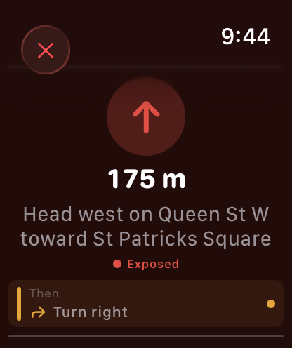
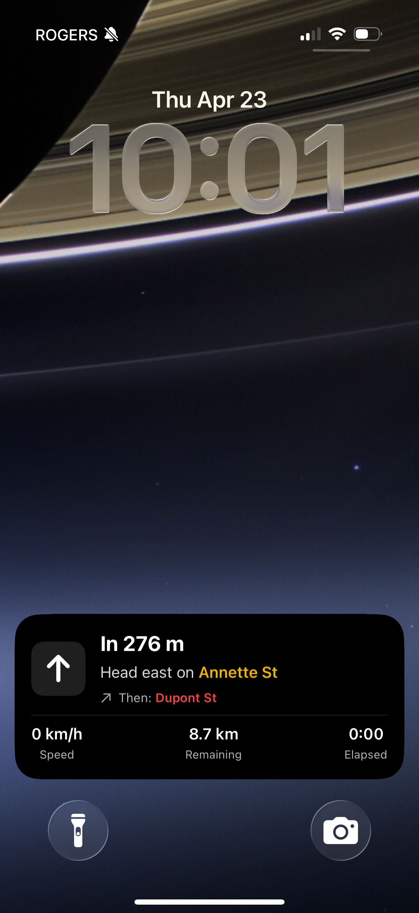

Enter where you're going. BikeRight builds the route around protected lanes, quiet streets, and the cycling infrastructure your city actually has — then keeps your eyes on the road while you ride.
Download on the App Store
Every route comes with a safety score and a full breakdown — how much is protected bike lane, how much is shared road, and where the gaps are. Green is protected. Yellow is shared. You see it all before you ride — and feel it on your wrist once you're on the road.
Google Maps finds the fastest route. BikeRight finds the one where you're not sharing a lane with delivery trucks.
Work, a friend's place, the other side of town — enter where you're headed and BikeRight does the rest.
Every route comes with a safety score: how much is protected bike lane, how much is shared road, and where the gaps are.
Every turn called through your wrist. Every segment's safety, too. Eyes on the road, hands on the bars.
Same commute, better streets. See the safety breakdown for your daily ride — or find a better one you didn't know existed.

Enter where you're headed or set a distance for a loop.
Each route scored and ranked. The safest option is always clear.

Green is protected. Yellow is shared. You see it all before you go.

Speed, distance, time — all up front.

Distance, time, average speed. Home safe.
No destination? Set a distance and get a loop scored the same way — built around your city's best cycling infrastructure.
Pulling out a phone at every intersection means your eyes are on a screen instead of on traffic. BikeRight is built so you don't have to look down.

BikeRight on Apple Watch taps your wrist as each new segment begins — one tap for a protected lane, two for shared, three for unprotected, and a pair of four-taps when it's rough enough that you might want to look up anyway. The safety breakdown you saw on the map, delivered through your wrist while you ride.
The same wrist calls every turn. A tap pattern for left, another for right — you learn the rhythm in one ride and never forget it.
No screen to check. No glance down. Eyes on the road. Hands on the bars.
Standalone app. Works without your phone. Apple Watch Series 6 and later.

Your next turn, distance to it, and the current segment's safety stay visible on the Lock Screen as a Live Activity. Dynamic Island keeps the turn in view even while you take a call or change music.
One less reason to take a hand off the bars.
No account. No tracking. No ads.
Your location never leaves your phone. Open the app and go.
One-way trips to any destination, scored by safety. Plus a standalone Apple Watch app with haptic turn-by-turn navigation.
BikeRight now has a blog for updates and release notes — plus corrected App Store links and a favicon fix.
Beta testing is done. BikeRight is now available to everyone, with Live Activities and Dynamic Island support.
Yes — completely free. No subscriptions, no in-app purchases, no ads. Every feature, including Apple Watch and destination mode, is included.
BikeRight analyzes each route segment against OpenStreetMap cycling infrastructure data — protected bike lanes, multi-use paths, shared roads, and unprotected streets. Each route gets an overall safety score so the safest option is always at the top.
No. Route generation and safety scoring happen entirely on your device. Your GPS coordinates are never sent to our servers — we don't have any. There are no analytics, no accounts, and no tracking.
Yes. BikeRight has a standalone Apple Watch app that delivers two kinds of information through haptic taps on your wrist:
No screen to check, no glance down. The safety score you chose on the map is the one you feel on the road.
Yes. If you prefer your phone in a handlebar mount, BikeRight keeps your next turn, distance, and the current segment's safety visible on the Lock Screen as a Live Activity. Dynamic Island keeps the turn in view even when another app is open, so you never need to touch the phone mid-ride.
Yes. Tap "Add a destination" on the home screen, enter an address, and BikeRight will find multiple routes — each scored and ranked by safety.
Not yet — BikeRight is iOS only for now. If you'd like to see an Android version, let us know. It helps us prioritize.
iOS only for now. If you're on Android, let us know you're out there — it helps us prioritize what comes next.